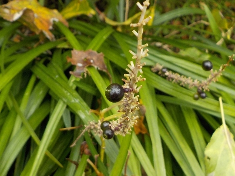
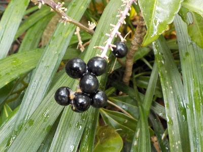
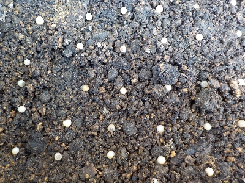
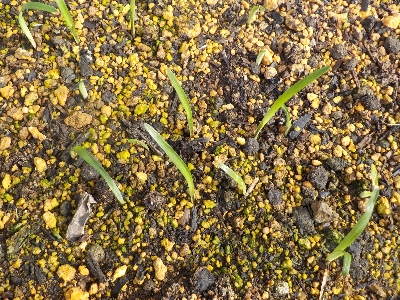
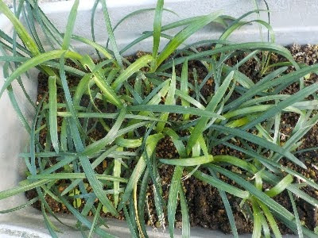
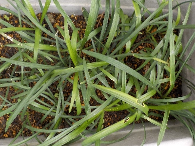

遊びで植物を育てよう
ヤブランのタネを収穫して、種蒔きして育てました。
更新日 : 2025/10/25
2024/11/17
ヤブランの実が出来ています。

黒い実が出来てました。ぎっしり出来ればいいんですけど、隙間だらけです。
実の裏側を見たら緑色だったので、まだ完熟していないようです。
黒くなったら収穫したいかな。
2024/12/22
ヤブランの実を収穫しました。

全体が黒くなったのでヤブランの実を収穫しました。
春になったらポリポットにタネまきするつもりです。
2025/03/22
ヤブランの種蒔きをしました。

発芽率がどれくらいあるかわからないですが、成長して窮屈になったら植え替えすればいいので間隔を狭くして植えました。
2025/06/15
やっとヤブランの芽が出ました。

3月に種蒔きしてから変化がなかったので、失敗したかと思ってました。
今頃が発芽時期でしたか。
最初の葉っぱがわりと大きいので、今後の成長速度が速いかもしれないです。
2025/10/13
子ヤブランが大きくなったので、育て方を変える時期になりました。

葉っぱが大量で込み合っていますね。何株あるんだろう？鉢に植えるとか地植えにするとか検討が必要になりました。
葉色の濃いものと薄い個体がありますが、この違いって何でしょうね？ただの個体差なのかな。個体差があると思うと楽しいですが、株と株が近過ぎて栄養不足になっていたら問題です。
2025/10/25
ヤブランを少し日当たりのいい場所に置いたら、緑が濃くなりました。

ヤブランのプランターを、少し日当たりにいい場所に移動しました。
元気になったみたいで、緑が濃くなりました。実生を植える時は突然変異や個体差を期待してるんですが、今回も特に違いはなそそうです。
正直、変化がなくてつまらないなと思ってます。
園芸 > 花 > ヤブラン
ヤブランの記事をまとめたものはこちら
【おいしいものを食べよう。】【しっかり寝よう。】
【ソロ活をしよう!】【季節感のあることをしよう。】【動画視聴はほどほどに。】【当サイトの全てのコンテンツは無断転載禁止です。】